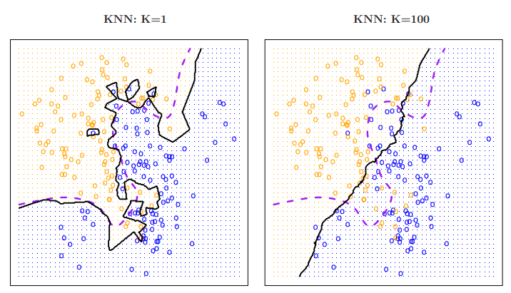
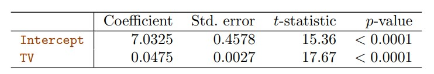
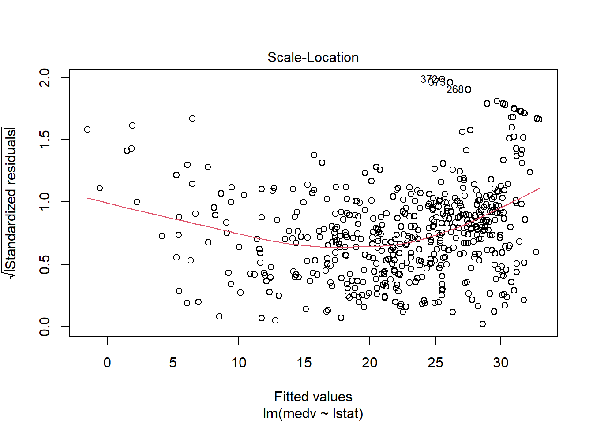
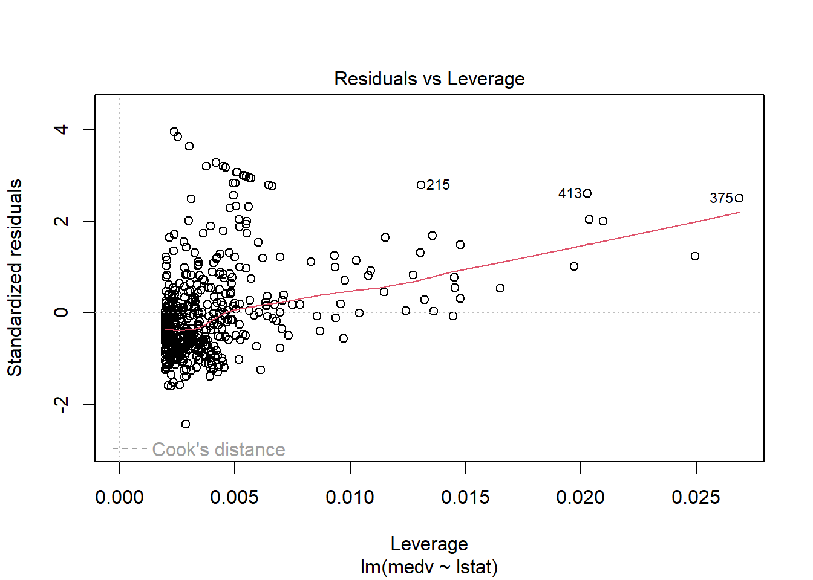
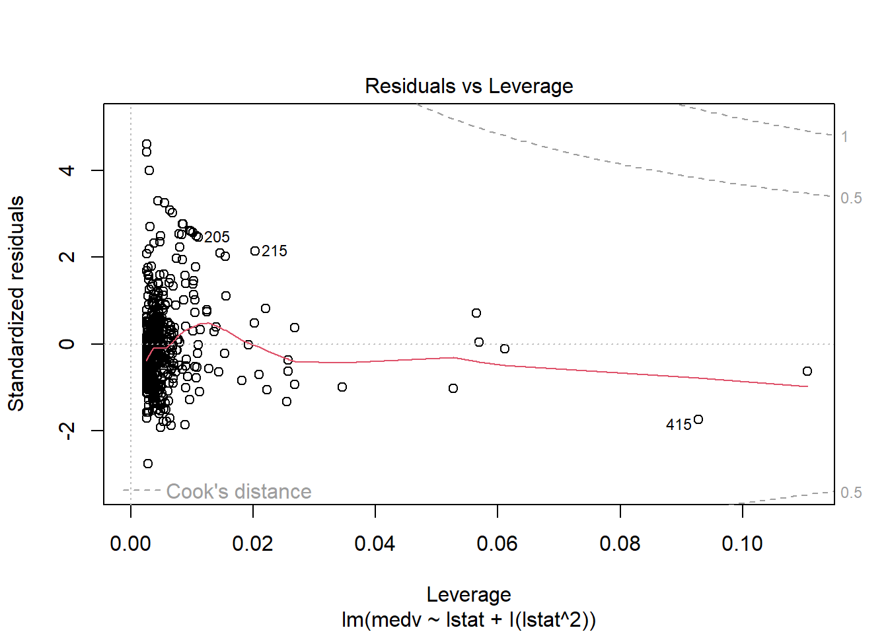

library (MASS)
library (ISLR2)
Attaching package: 'ISLR2'The following object is masked from 'package:MASS':
BostonIntegrantes: María José Bustamante - Nicolás Jadán
Carrera: Biomedicina
Ayuda a determinar si existe una relación entre las variables de interés para su futura aplicación.
Variable de entrada (input): Suelen denotarse como “X” y con un subídice para diferenciarlas. Se conocen como; predictores, características y variables independientes.
Variable de salida (output): Se denota como “Y”. Conocida generalmente como variable dependiente o de respuesta.
El aprendizaje estadístico se refiere a un conjunto de enfoques para estimar f que es una función fija pero desconocida que representa información sistemática que brinda X acerca de Y.
Predicción
Generalmente se suele tener los datos de entrada pero la parte difícil es obtener la salida. Esto se puede solucionar usando:

f: estimación para f
y: predicción resultante
Un ejemplo se muestra en la siguiente imagen:

El gráfico muestra los ingresos en función de los años de educación y antigüedad en el conjunto de datos Renta. La superficie azul representa la verdadera relación subyacente entre los ingresos y los años de educación y antigüedad, que se conoce porque los datos son simulados. Los puntos rojos indican los valores de estas cantidades para 30 individuos.
La exactitud de y depende de dos tipos de error:
Error reducible: Se refiere a la precisión de las predicciones que puede mejorar implementando mejores algoritmos para estimar f(X).
Error irreducible: Aunque fuera posible obtener la mejor estimación de f(X), seguirá existiendo un cierto nivel de incertidumbre ya que siempre existen dependencias de la variable objetivo con otras variables que no se están considerando o simplemente por procesos debidos al azar. Esto es lo que se conoce como error irreducible. Siempre proporcionará un límite superior en la precisión de la predicción para Y.
Inferencia
Para comprender la asociación entre Y y Xp se pueden plantear las siguientes preguntas:
¿Qué predictores se asocian a la respuesta?
¿Cuál es la relación entre la respuesta y cada predictor?
¿Puede resumirse adecuadamente la relación entre Y y cada predictor mediante una ecuación lineal, o la relación es más complicada?
Algunos modelos podrían utilizarse tanto para la predicción como para la inferencia, dependiendo delobjetivo final. Por ejemplo, los modelos lineales permiten una inferencia relativamente sencilla y predecible entre modelos lineales, pero puede que no produzcan predicciones tan precisas como otros enfoques. Por el contrario, algunos de los enfoques no lineales pueden brindar información bastante precisas para Y.
Métodos paramétricos: Abarcan un enfoque basado en modelos de dos pasos:
Suposición sobre la forma funcional para el modelo. Ej: f es lineal en X.
Después de seleccionar el modelo se requiere de un procedimiento que utilice los datos de entrenamiento para ajustar o entrenar el modelo.
El método más común para ajustar un modelo es el de mínimos cuadrados.
Ejemplo:

El modelo paramétrico reduce el problema para estimar f ya que se presenta como un conjunto de parámetros en el modelo lineal caso contario se debería ajustar f a una función arbitraria.
La desventaja de este modelo es que cuando el modelo elegido se aleje demasiado la estimación será deficiente y para resolver esto se debería estimar una mayor cantidad de parámetros lo que a su vez podría provocar un sobreaajuste de datos.
Métodos no paramétricos: Buscan una estimación de f que se acerque lo más posible a los puntos de datos sin que sea demasiado aproximada. Se ajustan fácilmente a una gama más amplia de formas posibles de f.
Una desventaja que presentan es que se necesita un gran número de observaciones para obtener una estimación precisa de f.
Existen métodos menos flexible o menos restrictivos en el sentido de que sólo pueden producir una gama relativamente pequeña de formas para estimar f.

Modelo restrictivo: Es útil cuando el principal interés es la inferencia, debido a que es más interpretable.
Modelos flexibles: Pueden guiar a estimaciones muy complicadas de f en las que es difícil comprender cómo se asocia cualquier predictor con la respuesta.
lasso: es un enfoque menos flexible y más interpretable que la regresión lineal proque en el modelo final la respuesta sólo estará relacionada con el modelo final.
Modelos aditivos generalizados (GAM): Más felxibles que la regresión lineal, pero menos interpretables ya que la relación entre cada predictor y respuesta se representa mediante una curva.
Modelos no lineales: bagging, boosting, máquinas de soporte de vectores y redes neuronales.
Supervisado: Para cada observación de los predictores hay una respesta asociada. Permite predecir con exactitud la prespuesta para futuras predicciones o comprender mejor la relaxción entre predictores y respuesta.
No supervisado: Se carece de una variable de respuesta que pueda supervisar el análisis. Es decir no hay una respuesta asociada al predictor, por lo que no e sposible ajustar a un modelo de regresión lineal.
Variables cuantitativas: Toman valores numéricos. Ej: Estatura, edad o ingresos.
Variables cualitativas: Toman valores en clases o categorías. Ej: Estado cívil, marcas de productos o diagnósticos.
La regresión logística es un método de clasificación binaria. Es bastante común seleccionar los métodos de aprendizaje estadístico en función de si la respuesta es cuantitativa o cualitativa, es decir, se puede usar la regresión lineal cuando es cuantitativa y la regresión logística cuando es cualitativa.
En en estadística: ningún método domina a todos los demás en todos los conjuntos de datos posibles.
Para evaluar el rendimiento de un método de aprendizaje estadístico se requiere cuantificar hasta qué punto el valor de respuesta predicho para una observación dada se aproxima al valor de respuesta verdadero para esa observación.
Error cuadrático medio (MSE): será pequeño si las respuestas predichas están muy cerca de las respuestas verdaderas, y será grande si para algunas de las observaciones, las respuestas predichas y verdaderas difieren sustancialmente.
Se calcula utilizando los datos de entrenamiento que se usaron para jaustar el modelo

En la imagen en la parte izquierda se puede ver que a medida que aumenta el nivel de flexibilidad, las curvas se ajustan mejor a los datos observados. La curva verde es la más flexible y se ajusta muy bien a los datos; sin embargo, observamos que se ajusta mal a la f verdadera (mostrada en negro) porque es demasiado ondulada.
En la parte derecha La curva gris muestra el MSE medio de entrenamiento en función de la flexibilidad, o más formalmente de los grados de libertad (flexibilidad de la curva). Los cuadrados naranja, azul y verde indican los MSE asociados a las curvas.
En este ejemplo, la verdadera f no es lineal, por lo que el ajuste lineal naranja no es lo suficientemente flexible para estimar bien f. La curva verde tiene el MSE de entrenamiento más bajo de los tres métodos, ya que corresponde al más flexible de ellos. El spline de suavizado representado por la curva azul se aproxima al óptimo.
En la parte derecha de la figura, a medida que aumenta la flexibilidad del método de aprendizaje estadístico, observamos un descenso monótono en el tiempo de entrenamiento. Es decir, a medida que aumenta la flexibilidad del modelo aumenta, el MSE de entrenamiento disminuirá.
Cuando un método determinado produce un MSE de entrenamiento pequeño pero un MSE de prueba grande, se dice que se están sobreajustando los datos.
Para minimizar el error de prueba esperado se requiere seleccionar un método de aprendizaje estadístico que consiga simultáneamente baja varianza y bajo sesgo.
Varianza: Se refire a la cantidad en la que f cambiaría si la estimación se realizara usando un conjunto de datos de enttrenamiento diferente. Lo ideal es que la estimación de f no varíe demasiado. En general los métodos estadísticos más flexibles tienen mayor varianza.
Sesgo: Es el error que se introduce al aproximar un problema de la vida real a un modelo muy simple o sencillo. Es poco probable que un problema de la vida real tenga una relación lineal tan sencilla, por lo que realizar una regresión lineal dará lugar a cierto sesgo en la estimación de f.
La varianza es intrínsecamente una cantidad no negativa, y el sesgo al cuadrado también es no negativo.
A medida que utilicemos métodos más flexibles, la varianza aumentará y el sesgo disminuirá.
Un buen rendimiento del conjunto de prueba de un método de aprendizaje estadístico requiere una varianza baja, así como un equilibrio entre sesgo y varianza.
Las tasas de error resultantes son de especial interés para la aplicación del clasificador a observaciones de prueba que no fueron utilizadas en el entrenamiento. Un buen clasificador es aquel en el que el error de prueba es mínimo.
Asigna cada observación a la clase más probable dados sus valores predictores. En un problema de dos clases en el que sólo hay dos posibles valores de respuesta, el clasificador de Bayes corresponde a la predicción de la clase uno si Pr(Y = 1|X = x0) > 0,5, y la clase dos en caso contrario.
En la imagen los círculos naranja y azules corresponden a observaciones de entrenamiento que pertenecen a dos clases diferentes.
Para cada valor de X1 y X2, existe una probabilidad diferente de que la respuesta sea naranja o azul.
La región sombreada en naranja refleja el conjunto de puntos para los que Pr(Y = naranja|X) es superior al 50 %, mientras que la región sombreada en azul indica el conjunto de puntos cuya probabilidad es inferior al 50 %.
La línea discontinua morada representa los puntos en los que la probabilidad es exactamente del 50 %. Esto se denomina el límite de decisión de Bayes.
Es utilizado para trabajar con datos reales. Es un algoritmo no supervisado donde “K” representa el número de “grupos” (clusters) a clasificar y el K-neighbor más cercano “K” representa el número de “vecinos” considerados en los “n” grupos del clasificador. En otras palabras busca en las observaciones más cercanas a la que se está tratando de predecir y clasifica el punto de interés basado en la mayoría de datos que le rodean.

La imagen muestra dos ajustes KNN a los datos simulados, utilizando K = 1 y K = 100. Cuando K = 1, el límite de decisión es excesivamente flexible y encuentra patrones en los datos que no se corresponden con el límite de decisión de Bayes. Esto corresponde a un clasificador que tiene un sesgo bajo pero una varianza muy alta. A medida que K aumenta, el método se vuelve menos flexible y produce una frontera de decisión cercana a la lineal. Esto corresponde a un clasificador de baja varianza pero alto sesgo. En este conjunto de datos simulados, ni K = 1 ni K = 100 dan buenas predicciones: tienen tasas de error de prueba de 0,1695 y 0,1925, respectivamente.
La regresión lineal, es un enfoque simple pero poderoso para el aprendizaje supervisado. El capítulo cubre las ideas clave que subyacen al modelo de regresión lineal, así como el enfoque de mínimos cuadrados que se usa más comúnmente para ajustar este modelo. También analiza algunas preguntas importantes que podríamos tratar de abordar al analizar datos y hacer recomendaciones para planes de marketing basados en análisis estadísticos. En general, el capítulo sirve como base para métodos de aprendizaje estadístico más avanzados y proporciona una descripción general de cómo se puede usar la regresión lineal para predecir respuestas cuantitativas.
La regresión lineal simple es un método estadístico utilizado para predecir una variable de respuesta cuantitativa basada en una única variable predictora. Asume que existe una relación aproximadamente lineal entre el predictor y las variables de respuesta. La relación lineal se puede expresar matemáticamente como Y ≈ β0 + β1X, donde Y es la variable de respuesta, X es la variable predictora, β0 y β1 son coeficientes que representan la intersección y la pendiente de la línea, respectivamente. El método se usa comúnmente en varios campos, como marketing, finanzas y ciencias sociales, para analizar datos y hacer predicciones.
Estimating the Coefficients
Estimar los coeficientes es un paso crucial en la regresión lineal simple. En la práctica, los coeficientes β0 y β1 son desconocidos, por lo que antes de que podamos usar el modelo de regresión lineal para hacer predicciones, debemos usar datos para estimar estos coeficientes. Se proporciona una discusión detallada sobre cómo estimar estos coeficientes usando el enfoque de mínimos cuadrados. El enfoque de mínimos cuadrados implica encontrar los valores de β0 y β1 que minimizan la suma de los residuos cuadrados entre los valores predichos y reales de la variable de respuesta.
Es un paso importante en la regresión lineal simple. Una vez que hemos estimado los coeficientes β0 y β1, es natural querer cuantificar hasta qué punto estas estimaciones son precisas. presenta una discusión detallada sobre cómo calcular los errores estándar, las estadísticas t y los valores p para estas estimaciones de coeficientes. Estas estadísticas se pueden utilizar para comprobar si existe una relación lineal significativa entre las variables predictoras y de respuesta, así como para construir intervalos de confianza para los coeficientes. Se analiza cómo interpretar estas estadísticas y cómo se pueden usar para hacer inferencias sobre los parámetros de la población. En general, evaluar la precisión de las estimaciones de los coeficientes es un paso esencial en la regresión lineal simple, ya que nos permite determinar si nuestro modelo es estadísticamente significativo y si nuestras estimaciones son confiables.

Es un paso importante en la regresión lineal simple. Una vez que hemos rechazado la hipótesis nula a favor de la hipótesis alternativa, es natural querer cuantificar hasta qué punto el modelo se ajusta a los datos. La calidad de un ajuste de regresión lineal generalmente se evalúa utilizando dos cantidades relacionadas: el error estándar residual (RSE) y la estadística R-cuadrado (R2). El RSE mide la cantidad promedio que la variable de respuesta se desvía del valor predicho, mientras que R2 mide qué parte de la variabilidad en la variable de respuesta puede explicarse por la variable predictora.
El error estándar residual (RSE) es una medida de la cantidad promedio que la variable de respuesta se desvía del valor predicho en la regresión lineal simple. Se especifica como calcular RSE usando la fórmula RSE = sqrt(RSS/(n-2)), donde RSS es la suma residual de los cuadrados y n es el tamaño de la muestra. El RSE mide la variabilidad de la variable de respuesta que no está explicada por la variable predictora, y se puede utilizar para evaluar qué tan bien se ajusta nuestro modelo a los datos. Un RSE más pequeño indica un mejor ajuste, mientras que un RSE más grande indica un peor ajuste. Analiza cómo interpretar RSE y cómo se puede usar junto con otras estadísticas como R-squared para evaluar la precisión del modelo. Nos permite evaluar qué tan bien se ajusta nuestro modelo a nuestros datos.
La regresión lineal múltiple es una extensión de la regresión lineal simple que nos permite modelar la relación entre una variable de respuesta y varias variables predictoras. Se muestra cómo realizar una regresión lineal múltiple utilizando el enfoque de mínimos cuadrados. El enfoque de mínimos cuadrados implica encontrar los valores de β0, β1, β2, ..., βp que minimizan la suma de los residuos cuadrados entre los valores predichos y reales de la variable de respuesta. Muestra como interpretar estos coeficientes estimados y cómo probar si son estadísticamente significativos mediante la prueba de hipótesis. Además, el capítulo cubre temas como la selección de modelos, la multicolinealidad y los efectos de interacción en la regresión lineal múltiple. En general, la regresión lineal múltiple es una herramienta poderosa para modelar relaciones complejas entre variables y se puede utilizar en una amplia gama de aplicaciones en diversos campos, como la economía, las finanzas y las ciencias sociales.

Se analiza cómo estimar los coeficientes de regresión en Regresión lineal simple utilizando el enfoque de mínimos cuadrados. El enfoque de mínimos cuadrados implica encontrar los valores de β0 y β1 que minimizan la suma de los residuos cuadrados entre los valores predichos y reales de la variable de respuesta. El capítulo proporciona una discusión detallada sobre cómo calcular estas estimaciones de coeficientes usando fórmulas y cómo interpretarlas en el contexto de nuestros datos. Además, el capítulo cubre temas como errores estándar, estadísticas t y valores p para estas estimaciones de coeficientes. Estas estadísticas se pueden utilizar para evaluar la precisión del modelo y construir intervalos de confianza para los coeficientes. En general, estimar los coeficientes de regresión es un paso esencial en la regresión lineal simple, ya que nos permite hacer predicciones basadas en nuestros datos y evaluar qué tan bien se ajusta nuestro modelo a nuestros datos.
Cuando realizamos una regresión lineal múltiple, por lo general estamos interesados en respondiendo algunas preguntas importantes. 1. ¿Al menos uno de los predictores X1, X2,...,Xp es útil para predecir ¿la respuesta? 2. ¿Todos los predictores ayudan a explicar Y , o es solo un subconjunto del predictores útil? 3. ¿Qué tan bien se ajusta el modelo a los datos? 4. Dado un conjunto de valores predictores, ¿qué valor de respuesta deberíamos predecir? y ¿qué tan precisa es nuestra predicción? Ahora abordaremos cada una de estas preguntas por separado.
Uno: ¿Existe una relación entre la respuesta y los predictores?
Dos: decidir sobre variables importantes
Tres: ajuste del modelo Cuatro: predicciones
En el contexto de la regresión lineal, los predictores cualitativos son variables que toman valores no numéricos, como categorías o etiquetas. Por ejemplo, en el conjunto de datos de Crédito que se muestra en la Figura 6, la variable predictora “educación” representa los años de educación y es una variable cuantitativa, mientras que la variable predictora “calificación” representa la calificación crediticia y es una variable cualitativa. Cuando se trata de predictores cualitativos en regresión lineal, necesitamos convertirlos en variables numéricas mediante un proceso llamado codificación. Un método común para codificar predictores cualitativos se llama codificación ficticia, donde creamos variables binarias para representar cada categoría del predictor cualitativo.
El modelo de regresión lineal estándar hace varias suposiciones altamente restrictivas que a menudo se violan en la práctica. Dos de los supuestos más importantes establecen que la relación entre los predictores y la respuesta es aditiva y lineal. El supuesto de aditividad significa que la asociación entre un predictor Xj y la respuesta Y no depende de los valores de los otros predictores. La suposición de linealidad establece que el cambio en la respuesta Y asociado con un cambio de una unidad en Xj es constante, independientemente del valor de Xj.
Para abordar estas limitaciones, existen varias extensiones del modelo lineal, como la regresión polinomial, los efectos de interacción y los modelos lineales generalizados. La regresión polinomial nos permite modelar relaciones no lineales entre los predictores y la respuesta al incluir términos de predictores de orden superior en nuestro modelo. Los efectos de interacción nos permiten modelar cómo dos o más predictores interactúan entre sí para afectar la variable de respuesta. Los modelos lineales generalizados amplían la regresión lineal para manejar variables de respuesta no normales mediante el uso de una función de enlace para relacionar la media de la variable de respuesta con una combinación lineal de predictores.
Estas extensiones brindan más flexibilidad en el modelado de problemas del mundo real donde las relaciones entre predictores y respuestas pueden no ser estrictamente aditivas o lineales.
La regresión lineal asume una relación lineal entre la respuesta y los predictores. Sin embargo, en algunos casos, la verdadera relación entre la respuesta y los predictores puede no ser lineal. Para dar cabida a las relaciones no lineales, podemos utilizar la regresión polinomial, que es una forma sencilla de extender directamente el modelo lineal. La regresión polinomial nos permite modelar relaciones no lineales entre los predictores y la respuesta al incluir términos de predictores de orden superior en nuestro modelo
La no linealidad significa que la relación entre la variable de respuesta y una o más variables predictoras no es lineal, lo que puede conducir a estimaciones sesgadas o ineficientes de los coeficientes de regresión. Para abordar la no linealidad, podemos usar la regresión polinomial, que nos permite modelar relaciones no lineales entre los predictores y la respuesta al incluir términos de predictores de orden superior en nuestro modelo.
Una suposición importante del modelo de regresión lineal es que los términos de error, ε1, ε2, ..., εn, no están correlacionados. Esto significa que si los errores no están correlacionados, el hecho de que εi sea positivo proporciona poca o ninguna información sobre el signo de εi+1. Los errores estándar que se calculan para los coeficientes de regresión estimados o los valores ajustados se basan en la suposición de términos de error no correlacionados. Si de hecho existe una correlación entre los términos de error, entonces los errores estándar estimados tenderán a subestimar los errores estándar verdaderos.
Otra suposición importante del modelo de regresión lineal es que los términos de error tienen una varianza constante, Var(εi)=σ2. Los errores estándar, los intervalos de confianza y las pruebas de hipótesis asociadas con el modelo lineal se basan en esta suposición. Si la varianza de los términos de error no es constante, los errores estándar estimados estarán sesgados y las pruebas de hipótesis y los intervalos de confianza no serán válidos. Una forma de abordar la varianza no constante es usar la regresión de mínimos cuadrados ponderados, que asigna pesos más grandes a las observaciones con varianzas más pequeñas y pesos más pequeños a las observaciones con varianzas más grandes.
Un valor atípico es un punto para el cual yi está lejos del valor predicho por el modelo. Los valores atípicos pueden surgir por una variedad de razones, como el registro incorrecto de una observación durante la recopilación de datos. Los valores atípicos pueden tener un gran efecto en los coeficientes de regresión estimados y pueden conducir a estimaciones sesgadas o ineficientes. Una forma de abordar los valores atípicos es utilizar métodos de regresión robustos, que son menos sensibles a los valores atípicos que la regresión ordinaria de mínimos cuadrados. Otro enfoque es identificar y eliminar los valores atípicos del conjunto de datos, aunque esto debe hacerse con precaución y solo después de una cuidadosa consideración de las razones de los valores atípicos.
Los puntos de alto apalancamiento son observaciones con un valor inusual para xi. Estos puntos pueden tener un gran efecto en los coeficientes de regresión estimados y pueden conducir a estimaciones sesgadas o ineficientes. Una forma de identificar puntos de alto apalancamiento es calcular la estadística de apalancamiento, que mide la influencia de cada observación en los coeficientes de regresión estimados. Un punto de alto apalancamiento es aquel para el cual la estadística de apalancamiento es mucho mayor que el valor promedio de la estadística de apalancamiento para todas las observaciones. Para abordar los puntos de alto apalancamiento, podemos usar herramientas de diagnóstico como gráficos residuales y la distancia de Cook para identificar observaciones influyentes y potencialmente eliminarlas del conjunto de datos.
La colinealidad se refiere a la situación en la que dos o más variables predictoras están estrechamente relacionadas entre sí. La colinealidad puede dificultar la estimación de los efectos individuales de cada variable predictora sobre la variable de respuesta y puede conducir a estimaciones inestables e ineficientes de los coeficientes de regresión. Una forma de detectar la colinealidad es calcular la matriz de correlación entre las variables predictoras. Un alto coeficiente de correlación entre dos variables predictoras indica que pueden ser colineales. Para abordar la colinealidad, podemos utilizar técnicas como la regresión de componentes principales o la regresión de crestas, que pueden ayudar a estabilizar las estimaciones de los coeficientes de regresión en presencia de predictores colineales.
Para responder a las siete preguntas sobre los datos publicitarios que nos propusimos responder al comienzo de este capítulo, necesitamos desarrollar un plan de marketing basado en el análisis de los datos. Un enfoque para desarrollar un plan de marketing es utilizar el análisis de regresión para modelar la relación entre el presupuesto de publicidad y las ventas de productos. Podemos usar técnicas como la regresión lineal múltiple o la regresión polinomial para capturar cualquier relación no lineal entre estas variables. También podemos utilizar herramientas de diagnóstico, como gráficos de residuos y pruebas de hipótesis, para evaluar la bondad de ajuste del modelo e identificar posibles problemas, como colinealidad o valores atípicos. Con base en los resultados de nuestro análisis, podemos desarrollar un plan de marketing que se adapte a las necesidades específicas de la empresa y su público objetivo.
La sección presenta una comparación del rendimiento de la regresión lineal y KNN en conjuntos de datos con relaciones levemente no lineales y fuertemente no lineales entre las variables predictoras y las variables de respuesta. Los resultados muestran que KNN puede superar la regresión lineal en los casos en que la relación entre las variables predictoras y las variables de respuesta no es lineal. Sin embargo, la elección del valor de K puede tener un impacto significativo en el rendimiento de KNN y seleccionar un valor apropiado para K puede ser un desafío. En general, la elección entre regresión lineal y KNN depende de las características específicas del conjunto de datos y los objetivos del análisis.
Librerías a usar:
MASS: colección de conjunto de datos y funciones.
ISLR2: Conjunto de datos asociados al libro de estudio.
library (MASS)
library (ISLR2)
Attaching package: 'ISLR2'The following object is masked from 'package:MASS':
BostonLa biblioteca ISLR2 contiene el conjunto de datos de Boston, que registra el medv (valor medio de la vivienda) de 506 secciones censales de Boston. Intentaremos predecir medv utilizando 12 predictores como rm (número medio de habitaciones por casa) edad (edad media de las casas) y lstat (porcentaje de hogares con un estatus socioeconómico bajo).
head(Boston) crim zn indus chas nox rm age dis rad tax ptratio lstat medv
1 0.00632 18 2.31 0 0.538 6.575 65.2 4.0900 1 296 15.3 4.98 24.0
2 0.02731 0 7.07 0 0.469 6.421 78.9 4.9671 2 242 17.8 9.14 21.6
3 0.02729 0 7.07 0 0.469 7.185 61.1 4.9671 2 242 17.8 4.03 34.7
4 0.03237 0 2.18 0 0.458 6.998 45.8 6.0622 3 222 18.7 2.94 33.4
5 0.06905 0 2.18 0 0.458 7.147 54.2 6.0622 3 222 18.7 5.33 36.2
6 0.02985 0 2.18 0 0.458 6.430 58.7 6.0622 3 222 18.7 5.21 28.7?Boston: Para obtener información sobre el conjunto de datos.
lm(): Para ajustar un modelo de regresión lineal simple.
Predictor: Istat
Respuesta: medv
La sintaxis básica es lm(y ∼ x, datos), donde y es la respuesta, x es el predictor y datos es el conjunto de datos en el que se mantienen estas dos variables.
attach(Boston)
lm.fit<-lm(medv~lstat,data = Boston)
lm.fit<-lm(medv~lstat)Si escribimos lm.fit, aparecerá información básica sobre el modelo.
Para obtener información más detallada, utilice summary(lm.fit). Se obtienen los valores p y los errores estándar de los coeficientes, así como el estadístico R2 y el estadístico F del modelo.
lm.fit
Call:
lm(formula = medv ~ lstat)
Coefficients:
(Intercept) lstat
34.55 -0.95 summary(lm.fit)
Call:
lm(formula = medv ~ lstat)
Residuals:
Min 1Q Median 3Q Max
-15.168 -3.990 -1.318 2.034 24.500
Coefficients:
Estimate Std. Error t value Pr(>|t|)
(Intercept) 34.55384 0.56263 61.41 <2e-16 ***
lstat -0.95005 0.03873 -24.53 <2e-16 ***
---
Signif. codes: 0 '***' 0.001 '**' 0.01 '*' 0.05 '.' 0.1 ' ' 1
Residual standard error: 6.216 on 504 degrees of freedom
Multiple R-squared: 0.5441, Adjusted R-squared: 0.5432
F-statistic: 601.6 on 1 and 504 DF, p-value: < 2.2e-16Podemos utilizar la función names() para averiguar qué otras piezas nombres de información se almacenan en lm.fit.
Es más seguro utilizar las funciones extractoras como coef() para acceder a ellas.
names(lm.fit) [1] "coefficients" "residuals" "effects" "rank"
[5] "fitted.values" "assign" "qr" "df.residual"
[9] "xlevels" "call" "terms" "model" coef(lm.fit)(Intercept) lstat
34.5538409 -0.9500494 confint(): Para obtener un intervalo de confianza para las estimaciones de los coeficientes.
confint(lm.fit) 2.5 % 97.5 %
(Intercept) 33.448457 35.6592247
lstat -1.026148 -0.8739505predict(): Usada para producir intervalos de confianza para la predicción de medv para un valor dado de lstat.
predict(lm.fit,data.frame(lstat=(c(5,10,15))),interval = "confidence") fit lwr upr
1 29.80359 29.00741 30.59978
2 25.05335 24.47413 25.63256
3 20.30310 19.73159 20.87461predict(lm.fit,data.frame(lstat=(c(5,10,15))),interval = "prediction") fit lwr upr
1 29.80359 17.565675 42.04151
2 25.05335 12.827626 37.27907
3 20.30310 8.077742 32.52846Por ejemplo, el intervalo de confianza del 95 % asociado a un valor lstat de 10 es (24.47, 25.63), y el intervalo de predicción del 95 % es (12.828, 37.28). Como era de esperar, los intervalos de confianza y predicción se centran en el mismo punto (un valor predicho de 10). En el mismo punto (un valor predicho de 25,05 para medv cuando lstat es igual a 10), pero estos últimos son mucho más amplios.
Ahora trazaremos medv y lstat junto con la línea de regresión por mínimos cuadrados utilizando las funciones plot() y abline(). abline(): se puede usar para agregar líneas verticales, horizontales o de regresión a un gráfico.
plot(lstat,medv)
abline(lm.fit)
Se puede observar indicios de no linealidad en la relación entre lstat y medv.
En la función abline() para dibujar una recta con intersección en a y pendiente b, se escribe abline(a,b). Unos ajustes adicionales para trazar líneas y puntos son:
lwd: Para la anchura de la línea de regresión.
pch: Para crear diferentes símbolos de trazado.
plot(lstat,medv)
abline (lm.fit , lwd = 3)
abline (lm.fit , lwd = 3, col = " red ")
plot (lstat , medv , col = " red ")
plot (lstat , medv , pch = 20)
plot (lstat , medv , pch = "+")
plot (1:20, 1:20, pch = 1:20)
par() y mfrow(): Indicaan a R que divida la pantalla de vizualización en paneles separados para poder visualizar gráficos simultaneamente.
plot(lm.fit)

par(mfrow=c(2,2))residuals (): Para calcular los residuos de un ajuste de regresión lineal.
rstudent(): Devuelve los residuales estudiados y se puede usar para representar gráficamente los residuos frente a los valores ajustados
plot ( predict (lm.fit), residuals (lm.fit))
plot ( predict (lm.fit), rstudent (lm.fit))
hatvalues(): Sirve para calcular los estadísticos utilizando cualquier número de predictores.
which max: identifica el índice del elemento mayor de un vector. En este caso dice que la observación tiene el mayor estadístico de apalancamiento (375).
plot ( hatvalues (lm.fit))
which.max( hatvalues (lm.fit))375
375 Para ajustar un modelo de regresión lineal múltiple por mínimos cuadrados, utilizamos de nuevo la función lm(). La sintaxis lm(y ∼ x1 + x2 + x3) se utiliza para ajustar un modelo con tres predictores, x1, x2 y x3.
lm.fit<-lm(medv~lstat+age,data=Boston)
summary(lm.fit)
Call:
lm(formula = medv ~ lstat + age, data = Boston)
Residuals:
Min 1Q Median 3Q Max
-15.981 -3.978 -1.283 1.968 23.158
Coefficients:
Estimate Std. Error t value Pr(>|t|)
(Intercept) 33.22276 0.73085 45.458 < 2e-16 ***
lstat -1.03207 0.04819 -21.416 < 2e-16 ***
age 0.03454 0.01223 2.826 0.00491 **
---
Signif. codes: 0 '***' 0.001 '**' 0.01 '*' 0.05 '.' 0.1 ' ' 1
Residual standard error: 6.173 on 503 degrees of freedom
Multiple R-squared: 0.5513, Adjusted R-squared: 0.5495
F-statistic: 309 on 2 and 503 DF, p-value: < 2.2e-16El conjunto Boston contiene 12 variables por lo que sería más tardado escribir todas las variables, en su lugar se utiliza:
lm.fit<-lm(medv~.,data = Boston)
summary(lm.fit)
Call:
lm(formula = medv ~ ., data = Boston)
Residuals:
Min 1Q Median 3Q Max
-15.1304 -2.7673 -0.5814 1.9414 26.2526
Coefficients:
Estimate Std. Error t value Pr(>|t|)
(Intercept) 41.617270 4.936039 8.431 3.79e-16 ***
crim -0.121389 0.033000 -3.678 0.000261 ***
zn 0.046963 0.013879 3.384 0.000772 ***
indus 0.013468 0.062145 0.217 0.828520
chas 2.839993 0.870007 3.264 0.001173 **
nox -18.758022 3.851355 -4.870 1.50e-06 ***
rm 3.658119 0.420246 8.705 < 2e-16 ***
age 0.003611 0.013329 0.271 0.786595
dis -1.490754 0.201623 -7.394 6.17e-13 ***
rad 0.289405 0.066908 4.325 1.84e-05 ***
tax -0.012682 0.003801 -3.337 0.000912 ***
ptratio -0.937533 0.132206 -7.091 4.63e-12 ***
lstat -0.552019 0.050659 -10.897 < 2e-16 ***
---
Signif. codes: 0 '***' 0.001 '**' 0.01 '*' 0.05 '.' 0.1 ' ' 1
Residual standard error: 4.798 on 493 degrees of freedom
Multiple R-squared: 0.7343, Adjusted R-squared: 0.7278
F-statistic: 113.5 on 12 and 493 DF, p-value: < 2.2e-16Para acceder a los componentes específicos de un elemento se escribe: summary(lm.fit)$sigma
vif(): utilizada para calcular los factores de inflación de la varianza. Para esto es necesario usar la siguiente librería:
library(car)Loading required package: carDatavif(lm.fit) crim zn indus chas nox rm age dis
1.767486 2.298459 3.987181 1.071168 4.369093 1.912532 3.088232 3.954037
rad tax ptratio lstat
7.445301 9.002158 1.797060 2.870777 Para utilizar todas la variables menos una:
lm.fit1<-lm(medv~.-age,data = Boston)
summary(lm.fit1)
Call:
lm(formula = medv ~ . - age, data = Boston)
Residuals:
Min 1Q Median 3Q Max
-15.1851 -2.7330 -0.6116 1.8555 26.3838
Coefficients:
Estimate Std. Error t value Pr(>|t|)
(Intercept) 41.525128 4.919684 8.441 3.52e-16 ***
crim -0.121426 0.032969 -3.683 0.000256 ***
zn 0.046512 0.013766 3.379 0.000785 ***
indus 0.013451 0.062086 0.217 0.828577
chas 2.852773 0.867912 3.287 0.001085 **
nox -18.485070 3.713714 -4.978 8.91e-07 ***
rm 3.681070 0.411230 8.951 < 2e-16 ***
dis -1.506777 0.192570 -7.825 3.12e-14 ***
rad 0.287940 0.066627 4.322 1.87e-05 ***
tax -0.012653 0.003796 -3.333 0.000923 ***
ptratio -0.934649 0.131653 -7.099 4.39e-12 ***
lstat -0.547409 0.047669 -11.483 < 2e-16 ***
---
Signif. codes: 0 '***' 0.001 '**' 0.01 '*' 0.05 '.' 0.1 ' ' 1
Residual standard error: 4.794 on 494 degrees of freedom
Multiple R-squared: 0.7343, Adjusted R-squared: 0.7284
F-statistic: 124.1 on 11 and 494 DF, p-value: < 2.2e-16Como alternativa, puede utilizarse la función update()
lm.fit1<-update(lm.fit,~.-age)lstat:black: Indica a R que debe incluir un término de interacción entre lstat y black.
lstat*age: incluye simultaneamente lstat, age, y el término de interacción lstat x age como predictores.
summary(lm(medv~lstat*age,data = Boston))
Call:
lm(formula = medv ~ lstat * age, data = Boston)
Residuals:
Min 1Q Median 3Q Max
-15.806 -4.045 -1.333 2.085 27.552
Coefficients:
Estimate Std. Error t value Pr(>|t|)
(Intercept) 36.0885359 1.4698355 24.553 < 2e-16 ***
lstat -1.3921168 0.1674555 -8.313 8.78e-16 ***
age -0.0007209 0.0198792 -0.036 0.9711
lstat:age 0.0041560 0.0018518 2.244 0.0252 *
---
Signif. codes: 0 '***' 0.001 '**' 0.01 '*' 0.05 '.' 0.1 ' ' 1
Residual standard error: 6.149 on 502 degrees of freedom
Multiple R-squared: 0.5557, Adjusted R-squared: 0.5531
F-statistic: 209.3 on 3 and 502 DF, p-value: < 2.2e-16lm puede ser ajustada a transformaciones no lineales de los predictores. La función I() es necesaria ya que el ^ tiene un significado especial I() en un objeto de fórmula; permite el uso estándar en R, que es elevar X a la potencia 2. Ahora realizamos una regresión de medv sobre lstat y lstat2.
lm.fit2<-lm(medv~lstat+I(lstat^2))
summary(lm.fit2)
Call:
lm(formula = medv ~ lstat + I(lstat^2))
Residuals:
Min 1Q Median 3Q Max
-15.2834 -3.8313 -0.5295 2.3095 25.4148
Coefficients:
Estimate Std. Error t value Pr(>|t|)
(Intercept) 42.862007 0.872084 49.15 <2e-16 ***
lstat -2.332821 0.123803 -18.84 <2e-16 ***
I(lstat^2) 0.043547 0.003745 11.63 <2e-16 ***
---
Signif. codes: 0 '***' 0.001 '**' 0.01 '*' 0.05 '.' 0.1 ' ' 1
Residual standard error: 5.524 on 503 degrees of freedom
Multiple R-squared: 0.6407, Adjusted R-squared: 0.6393
F-statistic: 448.5 on 2 and 503 DF, p-value: < 2.2e-16El valor p casi nulo asociado al término cuadrático sugiere modelo mejorado.
anova(): Sirve para cuantificar mejor hasta qué punto el ajuste cuadrático es superior al lineal.
lm.fit<-lm(medv~lstat)
anova(lm.fit,lm.fit2)Analysis of Variance Table
Model 1: medv ~ lstat
Model 2: medv ~ lstat + I(lstat^2)
Res.Df RSS Df Sum of Sq F Pr(>F)
1 504 19472
2 503 15347 1 4125.1 135.2 < 2.2e-16 ***
---
Signif. codes: 0 '***' 0.001 '**' 0.01 '*' 0.05 '.' 0.1 ' ' 1Modelo 1: Representa el submodelo lineal que tiene un solo predictor (lstat).
Modelo 2: Modelo cuadrático más amplico con dos predictores (lstat y lstat^2).
La función anova realiza una pruea de hipótesis que compara los dos modelos.
Una hipótesis nula quiere decir que los dos modelos se ajustan correctamente a los datos.
Una hipótesis alternativa significa que el modelo es superior.
En este caso, el estadístico F es 135 y el valor p asociado es prácticamente cero. Esto demuestra claramente que el modelo que contiene los predictores lstat y lstat2 es muy superior al modelo que sólo contiene el predictor lstat. Esto quiere decir que no existe linelidad.
plot(lm.fit2)
par(mfrow=c(2,2))Cuando se incluye lstat2 en el modelo se puede observar que hay pocos patrones dicernibles en los residuos.
Par crear un ajuste mayor se puede utilizar la función poly().
lm.fit5<-lm(medv~poly(lstat,5))
summary(lm.fit5)
Call:
lm(formula = medv ~ poly(lstat, 5))
Residuals:
Min 1Q Median 3Q Max
-13.5433 -3.1039 -0.7052 2.0844 27.1153
Coefficients:
Estimate Std. Error t value Pr(>|t|)
(Intercept) 22.5328 0.2318 97.197 < 2e-16 ***
poly(lstat, 5)1 -152.4595 5.2148 -29.236 < 2e-16 ***
poly(lstat, 5)2 64.2272 5.2148 12.316 < 2e-16 ***
poly(lstat, 5)3 -27.0511 5.2148 -5.187 3.10e-07 ***
poly(lstat, 5)4 25.4517 5.2148 4.881 1.42e-06 ***
poly(lstat, 5)5 -19.2524 5.2148 -3.692 0.000247 ***
---
Signif. codes: 0 '***' 0.001 '**' 0.01 '*' 0.05 '.' 0.1 ' ' 1
Residual standard error: 5.215 on 500 degrees of freedom
Multiple R-squared: 0.6817, Adjusted R-squared: 0.6785
F-statistic: 214.2 on 5 and 500 DF, p-value: < 2.2e-16Incluir términos de hasta quinto orden mejora el ajuste del modelo, pero si son mayores a este orden el modelo no tendrá valores p significativos en el ajuste de regresión.
Para obtener los polinomios brutos de la función poly(), debe utilizarse el argumento raw = TRUE.
Tranformación logarítmica:
summary(lm(medv~log(rm),data = Boston))
Call:
lm(formula = medv ~ log(rm), data = Boston)
Residuals:
Min 1Q Median 3Q Max
-19.487 -2.875 -0.104 2.837 39.816
Coefficients:
Estimate Std. Error t value Pr(>|t|)
(Intercept) -76.488 5.028 -15.21 <2e-16 ***
log(rm) 54.055 2.739 19.73 <2e-16 ***
---
Signif. codes: 0 '***' 0.001 '**' 0.01 '*' 0.05 '.' 0.1 ' ' 1
Residual standard error: 6.915 on 504 degrees of freedom
Multiple R-squared: 0.4358, Adjusted R-squared: 0.4347
F-statistic: 389.3 on 1 and 504 DF, p-value: < 2.2e-16Para esta parte se usará: Carseats data para intentar predecir las ventas de asientos de autos en 4000 localidades basado en una serie de predictores.
head(Carseats) Sales CompPrice Income Advertising Population Price ShelveLoc Age Education
1 9.50 138 73 11 276 120 Bad 42 17
2 11.22 111 48 16 260 83 Good 65 10
3 10.06 113 35 10 269 80 Medium 59 12
4 7.40 117 100 4 466 97 Medium 55 14
5 4.15 141 64 3 340 128 Bad 38 13
6 10.81 124 113 13 501 72 Bad 78 16
Urban US
1 Yes Yes
2 Yes Yes
3 Yes Yes
4 Yes Yes
5 Yes No
6 No YesPredictores cualitativos incluidos: Shelveloc (calidad de la ubicación de la estantería). Tiene 3 valores posibles: Malo, medio y bueno. A continuación ajustamos un modelo de regresión múltiple que incluye algunos términos de interacción.
lm.fit<-lm(Sales~.+Income:Advertising+Price:Age,data = Carseats)
summary(lm.fit)
Call:
lm(formula = Sales ~ . + Income:Advertising + Price:Age, data = Carseats)
Residuals:
Min 1Q Median 3Q Max
-2.9208 -0.7503 0.0177 0.6754 3.3413
Coefficients:
Estimate Std. Error t value Pr(>|t|)
(Intercept) 6.5755654 1.0087470 6.519 2.22e-10 ***
CompPrice 0.0929371 0.0041183 22.567 < 2e-16 ***
Income 0.0108940 0.0026044 4.183 3.57e-05 ***
Advertising 0.0702462 0.0226091 3.107 0.002030 **
Population 0.0001592 0.0003679 0.433 0.665330
Price -0.1008064 0.0074399 -13.549 < 2e-16 ***
ShelveLocGood 4.8486762 0.1528378 31.724 < 2e-16 ***
ShelveLocMedium 1.9532620 0.1257682 15.531 < 2e-16 ***
Age -0.0579466 0.0159506 -3.633 0.000318 ***
Education -0.0208525 0.0196131 -1.063 0.288361
UrbanYes 0.1401597 0.1124019 1.247 0.213171
USYes -0.1575571 0.1489234 -1.058 0.290729
Income:Advertising 0.0007510 0.0002784 2.698 0.007290 **
Price:Age 0.0001068 0.0001333 0.801 0.423812
---
Signif. codes: 0 '***' 0.001 '**' 0.01 '*' 0.05 '.' 0.1 ' ' 1
Residual standard error: 1.011 on 386 degrees of freedom
Multiple R-squared: 0.8761, Adjusted R-squared: 0.8719
F-statistic: 210 on 13 and 386 DF, p-value: < 2.2e-16contrasts() devuelve la codificación que R utiliza para las variables ficticias.
attach(Carseats)
contrasts(ShelveLoc) Good Medium
Bad 0 0
Good 1 0
Medium 0 1ShelveLocGood que toma un valor de 1 si la ubicación de la estantería es buena, y 0 en caso contrario.
El hecho de que el coeficiente de ShelveLocGood en el resultado de la regresión sea positivo indica que una buena estanterías se asocia a ventas elevadas (en comparación con las malas).
ShelveLocMedium tiene un coeficiente positivo menor, lo que indica tiene ubicación media de las estanterías se asocia a mayores ventas que a una mala ubicación, pero con menores ventas que una buena ubicación.
LoadLibraries <- function () {
library (ISLR2)
library (MASS)
print ("The libraries have been loaded .")
}Ahora si se escribe LoadLibraries, R dirá qué contiene la función.
LoadLibrariesfunction () {
library (ISLR2)
library (MASS)
print ("The libraries have been loaded .")
}Si llamamos a la función, las librerías se cargan y la sentencia print se imprime.
LoadLibraries()[1] "The libraries have been loaded ."